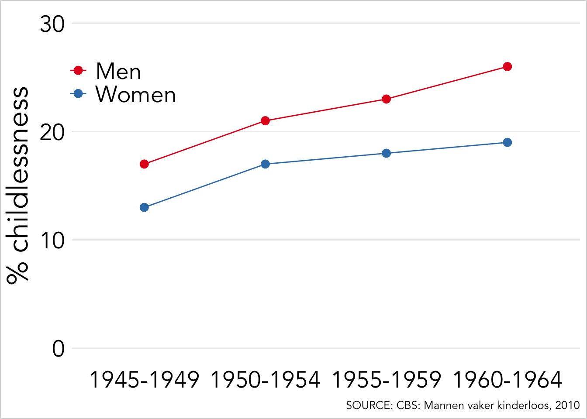
Kinderloosheid in Nederland
R
Fertility
Wat gedachten over kinderloosheid in Nederland naar aanleiding van een interview over het onderwerp
Voor een podcast werd ik geïnterviewd door Eveline van Rijswijk over kinderloosheid. Dat was een erg plezier gesprek. Hieronder wat onderwerpen waarover we spraken.
Hoeveel mensen krijgen (geen) kinderen?
Kinderloosheid is de afgelopen decennia flink gestegen. In Nederland was het zo dat van vrouwen alle vrouwen die geboren zijn tussen 1945 en 1949 ongeveer 13% geen kinderen hadden, terwijl dit voor vrouwen uit 1960-1965 gestegen was tot 19%. Voor mannen zien we een zelfde stijging van ongeveer 17% naar 26%.
Nederland
Nederland is hier zeker niet alleen in, en in vrijwel alle Westerse landen zien we dit patroon. Het is niet alleen de kinderloosheid die zo drastisch veranderd is, ook het kindertal is flink gedaald en de gemiddelde leeftijd waarop mensen vader of moeder worden hard gestegen.
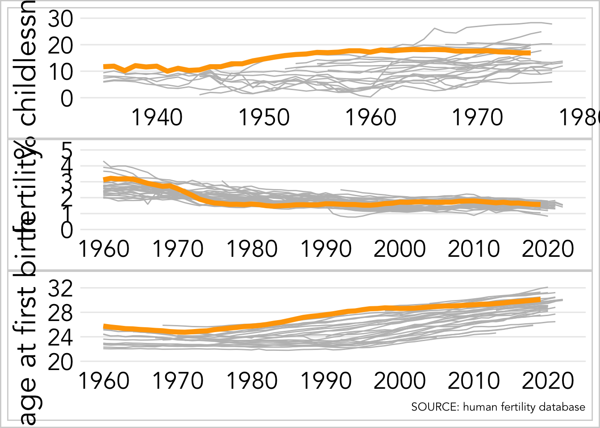
Qua kinderloosheid deden Nederlands vrouwen het in 1975 “gemiddeld”.
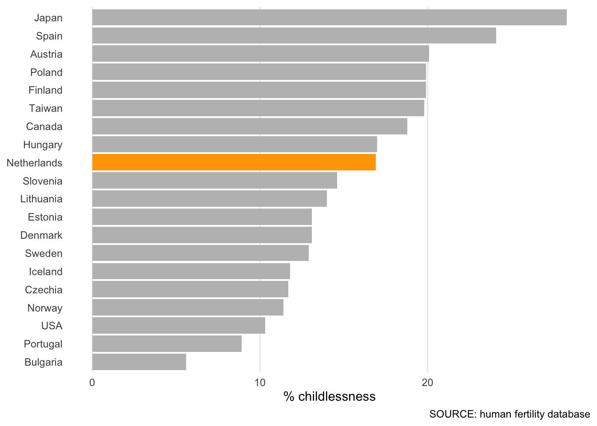
Voorspellers van kinderloosheid
Twee factoren die sterk samenhangen met kinderloosheid zijn geslacht en opleidingsniveau, en dit geldt voor vele landen. Mannen hebben een grotere kans om kinderloos te blijven dan vrouwen. Het opleidingsniveau heeft doorgaans een verschillend effect voor mannen en vrouwen: waar hoog opgeleide vrouwen vaak de grootste kans hebben om geen kinderen te krijgen, zijn het bij mannen juist de laag opgeleiden.
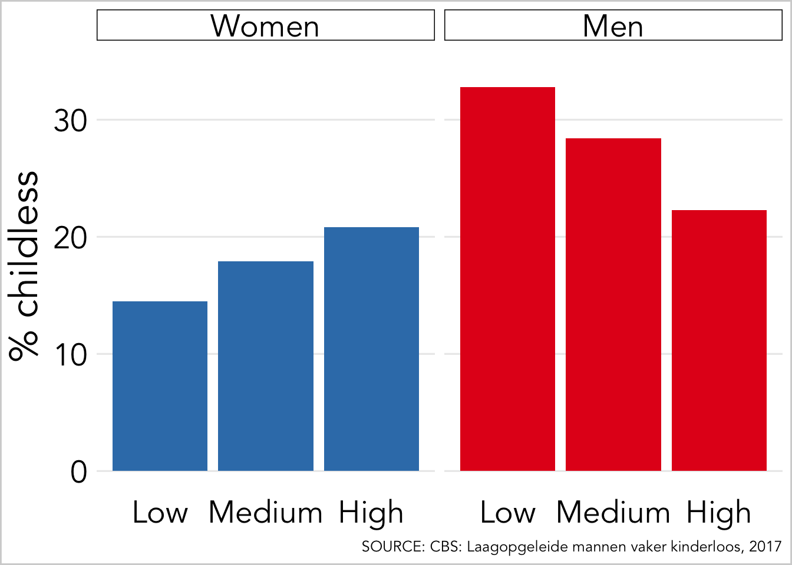
Waarom neemt kinderloosheid toe?
De belangrijkste redenen voor de toename in kinderloosheid is dat koppels het proberen te krijgen van kinderen enorm hebben uitgesteld. Veel van die uitstel leidt tot afstel. Dat is zo, omdat de vruchtbaarheid (de biologische capaciteit om kinderen te krijgen) afneemt voor koppels. Met name de vruchtbaarheid van ene vrouw neemt sterk af boven de leeftijd van 35. De kinderwens wordt vaak uitgesteld tot een periode waarin het minder makkelijk is om kinderen te krijgen. Medisch geassisteerde reproductie biedt hier nauwelijks een oplossing voor.
Maar waarom stellen individuen de kinderwens dan uit? In grote mate heeft dit te maken met de positie van de vrouw in de maatschappij. Sinds ongeveer halverwege de vorige eeuw, is het aantal vrouwen dat een (hogere) opleiding volgt en dat een baan heeft enorm gestegen. Deze ontwikkelingen resulteerden in een grotere autonomie voor vrouwen en een betere socioeconomische positie. Het idee dat de vrouw meer was dan een moeder of huisvrouw kwam gelukkig sterk naar voren.
Omdat het volgen van (hoger) onderwijs en het veroveren van een goede arbeidspositie niet goed samengaat met de intensieve opvoeding van kinderen, zullen veel koppels de kinderwens uitstellen tot de opleiding is afgerond en een goede baan is gevonden. Dat het hebben van een baan en de opvoeding van kinderen niet fijn te combineren zijn, wordt versterkt door het feit dat dat als er kinderen geboren worden, de vrouw veelal werd (wordt?) gezien als de primaire verzorger van het kind én ook nog degene is die het leeuwendeel van het huishouden doet. Vrouwen zijn massaal toegetreden tot de arbeidsmarkt, maar hier is niet een vermindering van het huishoudelijke werk tegen over komen te staan. Voor veel vrouwen zal dus gelden dat ze een baan moeten combineren met het runnen van het huishouden én de verzorging van het kind. Dit is allemaal iets gechargeerd, en gelukkig zijn de tijden aan het veranderen, maar het is dus goed te begrijpen dat vooral vrouwen de kinderwens willen uitstellen omdat zij minder tijd krijgen om in hun carriére (of zichzelf) te investeren als een kind geboren wordt.
De door de gestegen welvaart kwam er ook een grotere nadruk op zelf-ontplooing. De “post-materialistische” waarden kwamen bovendrijven: mensen willen ‘leuke dingen’ doen, en zichzelf ontwikkelen eer ze aan kinderen beginnen. Tegelijkertijd zijn de kosten voor het opvoeven van kinderen toegenomen, zowel in termen van geld als tijd, wat jongeren meer dan eerdere generaties deed uitstellen.
En zo geschiedde het uitstellen van de kinderwens. Voor veel koppels leidt deze uitstel tot ongewenste kinderloosheid.
Naast het uitstellen van de kinderwens door koppels is de stijgende kinderloosheid óók te verklaren door het toenemende aantal mensen dat geen (geschikte) partner vindt.
De toename van kinderloosheid is echter ook, maar in mindere mate, gestegen door een toename van mensen die geen kinderen willen.
Neemt de vrijwillige kinderloosheid toe?
Een belangrijke vraag is of de stijging in kinderloosheid vooral kan worden toegeschreven aan vrijwillige of onvrijwillige kinderloosheid. Dit is belangrijk omdat bij het laatste een grotere groep individuen geraakt zouden worden in hun welzijn, en bij de eerste niet.
the Netherlands
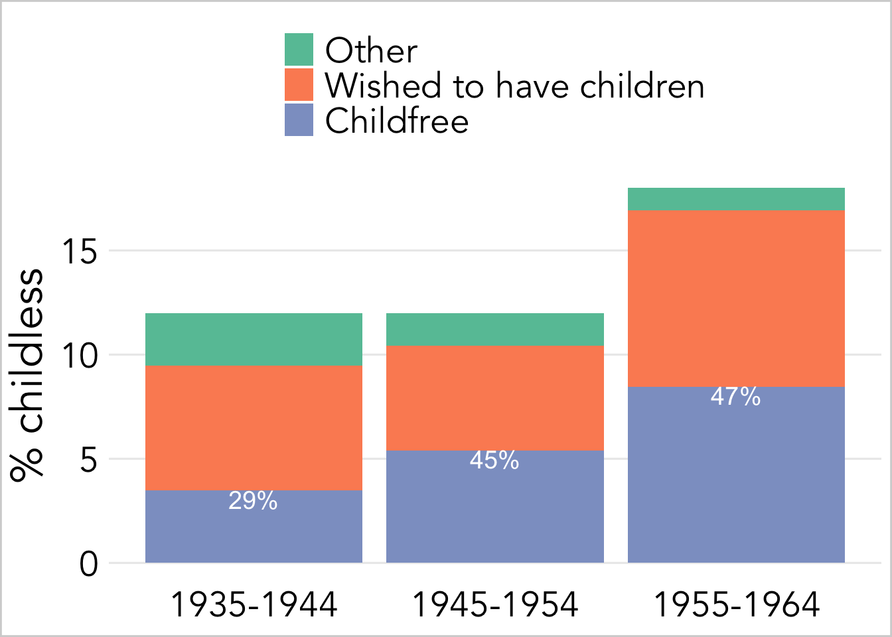
Verenigde staten
Het blijkt dat zowel vrijwillige als onvrijwillige kinderloosheid is toegenomen. Eerst maar eens twee voorbeelden uit de Verenigde Staten. Rybinska (2020) onderzocht de intentie van mannen en vrouwen om kinderloos te blijven.
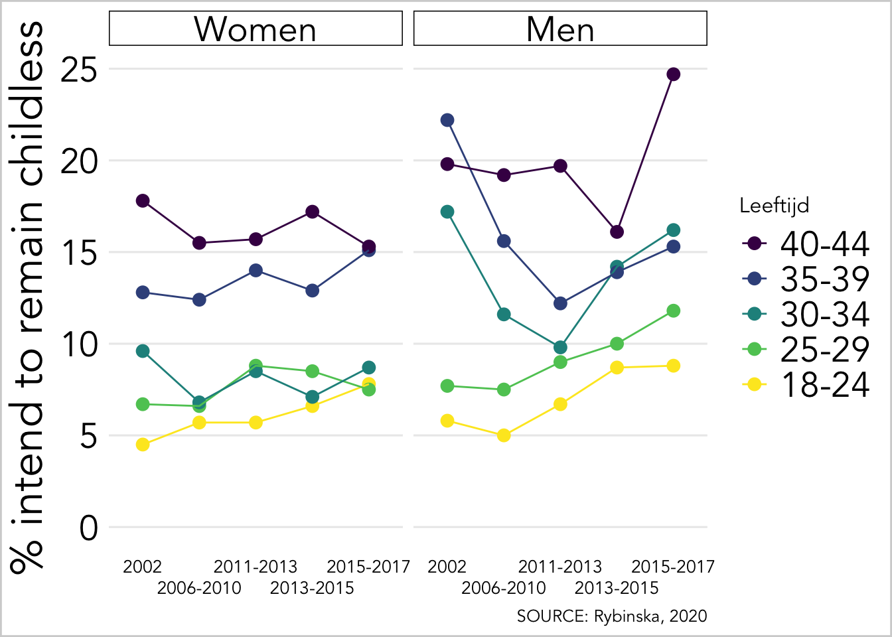
Een ander voorbeeld komt van Chancey (2006).
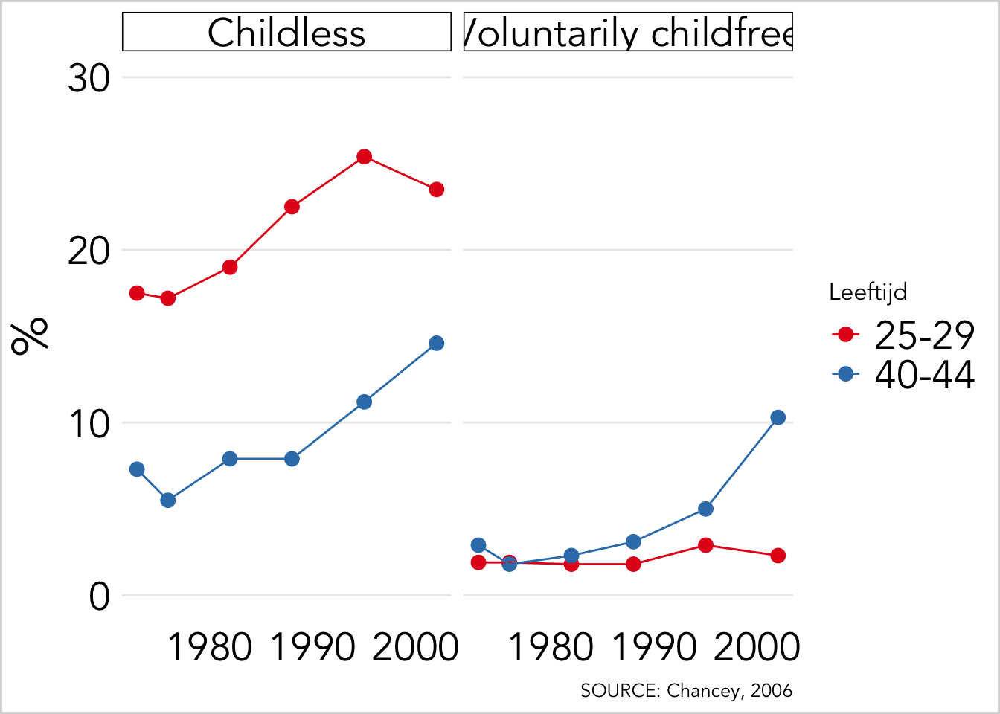
Hoe meet je vrijwillige kinderloosheid eigenlijk?
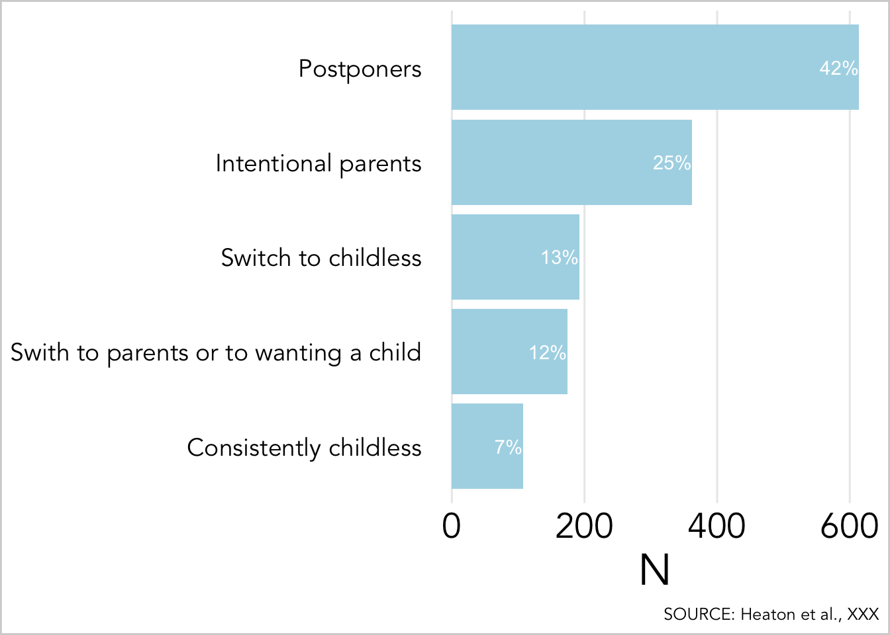
Op basis van de Graaf 2005. Vrouwen van 36–45 jaar die verwachten kinderloos te blijven, 2003:
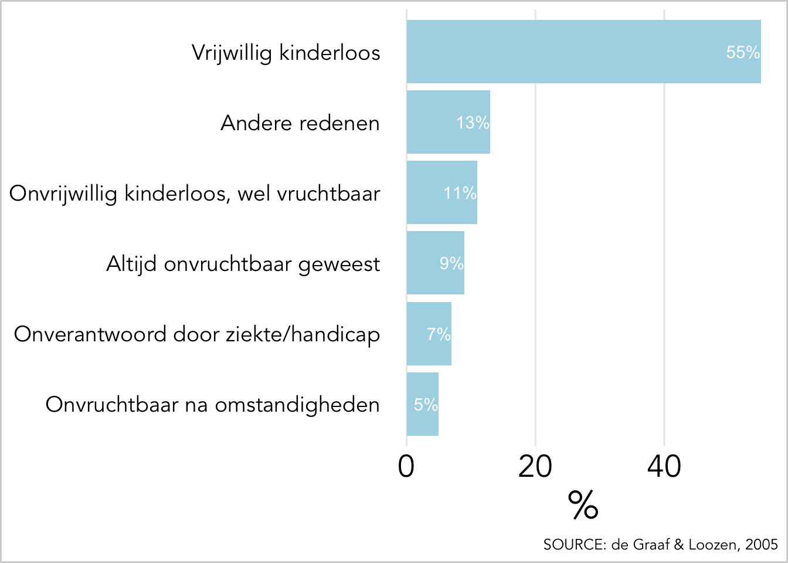
Wie zijn de vrijwillige kinderloze mensen?
Het is niet makkelijk te karakteriseren wat voor type personen vrijwillig kinderloos zijn en wat voor type mensen graag een kind willen. Een evident verschil is dat vrijwillige kinderloosheid minder vaak voor komt bij religieuze mensen dan bij niet-religieuze mensen. Ook zijn hoog-opgeleide vrouwen en vrouwen met een hoger inkomen vaker bewust kindloos. Een belangrijke reden is vermoedelijk dat vrouwen met een hogere socioeconomische positie hun kinderwens uitstellen, maar niet bewust kinderloos willen blijven, maar dat het leven zich zo voltrekt dat er geen kind komt, maar dat daar ook geen sterke wens toe was. Kinderloos bij kans, maar niet ongewenst. Het lijkt zo te zijn dat de voorspellers van vrijwillige kinderloosheid tegenwoordig minder sterke effecten hebben dan decennia geleden, wat geïnterpreteerd kan worden als de diffusie van het idee kinderloosheid. [Chancey, 2006]
Verspreidt vrijwillige kinderloosheid zich in de populatie?
Sociologen zijn vaak geïnteresseerd in hoe en of nieuwe ideeën zich verspreiden in een populatie.
Waarom willen mensen eigenlijk geen kinderen?
Redenen om geen kinderen te hebben vanuit CBS: Arie de Graaf Bron: Onderzoek Gezinsvorming, 2003.
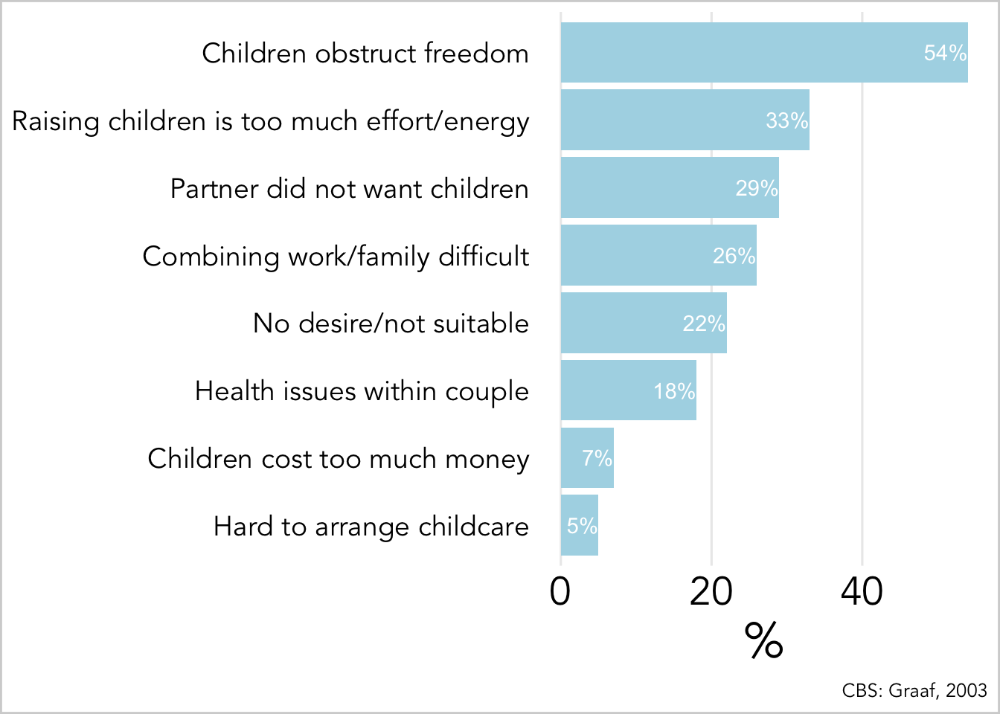
Hoe kijken we eigenlijk naar mensen die bewust geen kinderen willen?
Acceptatie van vrijwillige kinderloosheid
Maar er is goed nieuws. In een razend tempo is de publieke acceptatie van vrijwillige kinderloosheid gestegen. In 1965 was het nog 20%, in 1996 90%.
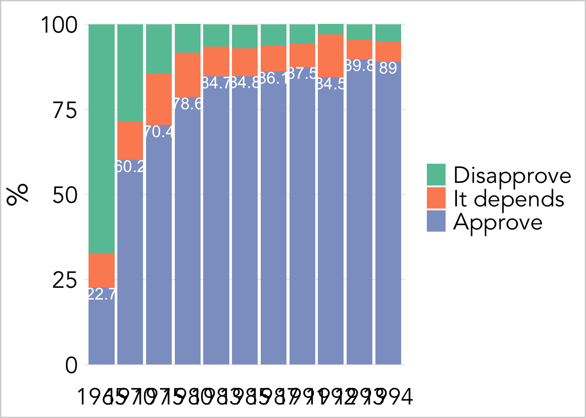
Waarom vond deze verandering plaats? Ten eerste omdat deze plaats vonden in een tijd van toenemende welvaart en de vervulling van primaire behoeften. Jongere generaties streefden niet enkel naar de vervulling van deze primaire behoeften, maar kregen nieuwe waarden die ze nastreefden. Belangrijke “postmaterialistische waarden” waren autonomie, zelf-ontwikkeling, en tolerantie. In het licht van deze waarden is de vrijwillige kinderloosheid geen gek idee. Op een zelfde manier werd er ook steeds ruimhartiger gedacht over bijvoorbeeld ongehuwde, samenwonende koppels of scheidingen, en andere vormen die niet onder de traditionele familie normen beschouwd werden (zie ook the Second Demographic Transition; Lesthaeghe, 2010).
Ook vond in deze tijd van toenemende welvaart en modernisatie de secularisatie plaats. De kerk, met haar expliciet pronatale boodschappen, kreeg een minder grote rol. Enkele voorbeelden hiervan zijn huisbezoeken van priesters aan getrouwde koppels zonder kinderen, en campagnes tegen borstvoeding (waardoor de reproductie weer sneller op gang zou komen). Door de secularisatie was de vrouw niet meer door God op de aarde gezet om meer lammeren Gods te produceren. Toenemende methoden van anticonceptie en de normalisatie van het gebruik hiervan was een derde culturele tendens die de acceptatie van vrijwillige kinderloosheid waarschijnlijk ten goede kwam [NOORDHUIZEN REFERENTIE].
Wie zijn die 10% van de bevolking die het vrijwillige kinderloosheid niet accepteren als keuze? Of je naar de kerk gaat of niet was de belangrijkste verklaring, maar ook mensen met lagere inkomens en met een lager opleidingsniveau waren meer geneigd om bij deze 10% te horen. Deze resultaten worden ondersteund door het werk van Merz & Liefbroer, die keken naar de acceptatie van kinderloosheid in een dozijn Europese landen. Zij vonden dat jongere, minder traditionele, hoger opgeleide, en minder religieuze respondenten vrijwillige kinderloosheid meer accepteerden. Zij vonden verder dat vrouwen het vaker accepteerden dan mannen, dat werkenden het vaker accepteerden dan niet-werkenden, en dat mensen die positiever over hun inkomen waren het ook vaker accepteerden.
Waarom willen mensen eigenlijk kinderen?
Alhoewel dit een gemakkelijk te beantwoorden vraag lijkt, is hier toch behoorlijk gesteggel over, zeker onder de economen die hier allerlei wilde theorieën voor hebben. Een minder wild idee is dat mensen kinderen ‘nemen’, zodat die kinderen voor je kunnen zorgen op de oude dag. Dit lijkt plausibel, maar gaat direct in tegen evolutionaire ideeën over ouderschap. Een ander idee is dat mensen kinderen nemen (of juist niet) om onzekerheid in hun leven te vermijden. Weer een ander idee vanuit de economie is dat mensen kinderen willen omdat die kinderen op latere leeftijd zouden zorgen voor goede sociale relatie die de sociale positie van de ouders zou versterken. Crazy. Een wat plausibeler economisch idee is dat geld belangrijk is voor koppels in het krijgen van kinderen, en betere financiele omstandigheden voor individuen leiden vaak tot meer kinderen (alhoewel de effecten niet sterk zijn). Alhoewel economische motieven belangrijk zijn in het krijgen van kinderen, lijken economische motieven weinig invloed te hebben óf mensen wel of geen kinderen willen hebben.
Morgan King en BLA schrijven hier nuttige dingen over. De kinderwens zal voortkomen uit een combinatie van biologische invloeden, sociale invloeden, en ‘rationale’ afwegingen. Met biologische invloeden wordt bedoeld dat onze evolutionaire historie er voor gezorgd heeft dat ouderschap een lonkende keuze is, en dat kinderen opvoeden plezierig is. Onze enorme affectie voor beesten met grote ogen en ronde gezichtjes is een duidelijk voorbeeld van onze aangeboren(?) voorkeuren. Ook zijn er studies die zicht richten op de enorme kinderwens van vrouwen die uit het niets kan ontstaan, de zogeheten ‘baby fever’.
Onze voorkeuren bestaan niet in een vacuum, en ook onze aangeboren neigingen tot bepaalde voorkeuren zullen alleen tot uiting komen als onze omgeving daar de gelegenheid voor biedt. Dat kan positief of negatief. Het is een understatement om te zeggen dat ouders heel veel van hun kinderen houden. Dat ervaren van dat algehele sentiment zal de kinderwens van mensen vermoedelijk verhogen. De omgeving kan ook dermate onderdrukkend zijn, dat de enige uitkomst ouderschap is. Dus als de social omgeving, vrouwen ziet als moeders, en dat enkel moeders echte vrouwen zijn, dan zullen vrouwen dit internaliseren en zullen zij een kinderwens hebben. Religies zijn hier doorgaans goed in.
De kinderwens zal verder, althans in huidige tijden, een afweging zijn tussen de verschillende elementen die belangrijk zijn in een mensenleving; zelf-ontplooing, vrijheid, werk, en zulks wat. Hoe een individu deze dingen weegt, in combinatie met de perceptie hoe kinderen deze dingen zullen dwarsbomen, zal tot een bepaalde kinderwens leiden. Waarschijnlijk zal voor de meeste mensen de keuze zijn waarvan zij denken dat ze dat het meeste levensgeluk zal opbrengen.
We kunnen het natuurlijk ook gewoon aan mensen vragen. Van Balen & Trimbos_Kemper ondervroegen XXX Amerikaans koppels die graag een kind willen en al een tijd aan het proberen waren, waarom ze eigenlijk kinderen wilden hebben. Onderstaande grafiek geeft het antwoord.
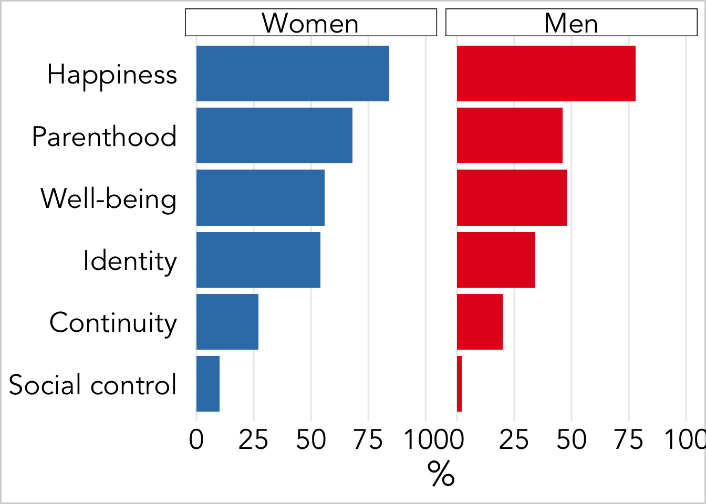
Wat beïnvloedt de kinderwens?
Waarom krijgen mensen minder kinderen dan ze willen?
De belangrijkste redenen daarvoor zijn: 1) sommige mensen / koppels zijn minder vruchtbaar; 2) door het uitstellen van de kinderwens en de afnemende vruchtbaarheid; 3) door het niet vinden van een partner of het eindigen van een relatie. Het kan natuurlijk ook zo zijn dat mensen hun gewenste kindertal bijstellen na levensgebeurtenissen (zoals de geboorte van een eerste kind), en dat dit nieuwe gewenste aantal eerder lager dan hoger uitvalt.
Waarom willen en krijgen de meeste koppels twee kinderen?
De meeste mensen krijgen twee kinderen. Gerelateerd hieraan, als je mensen vraagt naar hun favoriete kindertal, dan is het meest gekozen antwoord “2”. Waarom is 2 het magische getal? Wie zal het zeggen. Misschien kunnen we wel beantwoorden: waarom is 1 niet het meest gewenste aantal? Veel mensen vinden toch dat een familie bestaat uit meerdere kinderen, en hebben romantische en waarschijnlijk verkeerde ideeën over hoe ‘enig kinderen’ verwend en onaangepast worden. Of hoe twee kinderen met elkaar kunnen spelen, en de ouders zelfs werk uit handen zouden kunnen nemen. Waarom niet meer dan 2? Wederom speculatie, maar er is een studie “carseats as contraception” dat beweert dat veiligheidswetten, in het specifieke geval, verplichte autostoeltjes voor kinderen tot en met 8 jaar een zeer antinatale werking heeft. Met name voor ouders met twee kinderen. Drie kinderzitjes passen niet in één auto, dus een derde kind vergt een nieuwe auto. Volgens de auteurs hebben de regels van kinderzitjes in 2017 voor 8000 minder geboortes gezorgd in de Verenigde Staten. Wellicht zijn er meer van dit soort maatschappelijke ‘beperkingen’ die een hogere fertiliteit in de weg staan. Een fiets heeft ook maar twee zitjes. Een huis met vier slaapkamers is een luxe te noemen. Twee ouders hebben ook maar twee paar handen.
Hoe kan de overheid zich bemoeien met het kindertal?
De overheid bemoeit zich zeker met het kindertal. Over de gehele wereld gebeurt dat nog steeds vaker met anti-nataal beleid dan met pro-nataal beleid, alhoewel er steeds meer overheden zijn die pronatale plannen hebben. Beleid om het kindertal te onderdrukken zijn vaak effectiever, maar kunnen ook erg drastisch zijn. Een effectieve methode om het kindertal in een land omlaag te krijgen is om jonge meisjes en vrouwen naar school te sturen. De vrouwen ontwikkelen meer autonomie en een betere culturele en economische positie, en zullen minder vaak op jonge leeftijd kinderen hebben. Ook worden dochters dan ‘duurder’, waardoor families minder kinderen zullen nastreven. Informatiecampagnes over de problemen met grote gezinnen of over anticonceptie is ook een effectieve methode. Dan zijn er nog de ernstigere vormen van het controleren van het kindertal zoals (verplichte) sterilisatie. China’s one child policy was succesvol, en werd onder andere geforceerd door boetes aan families te geven met meer kinderen, of door mensen met een te groot kindertal uit te sluiten voor bepaalde, prominente posities.
In landen met een laag kindertal is er vaak beleid om het verschil tussen het gewenste en het gerealiseerde kindertal te reduceren, met de gedachte om de negatieve gevolgen van ongewenste kinderloosheid terug te dringen. In Europa zijn er ook steeds meer landen die actief het kindertal omhoog proberen te krijgen om de negatieve gevolgen van de vergrijzing tegen te gaan. Er is maar weinig dat echt werkt. Met name in de oost-Europese landen proberen ze van alles. In Polen heeft een baby bonus (1600 dollar per kind) niet geleid tot een hoger kindertal. In Hongarije halen ze alles uit de kast: aanzienlijke leningen die als gift worden beschouwd als een koppel drie kinderen heeft; genationaliseerde IVF-klinieken; forse belastingvoordelen voor gezinnen met vier of meer kinderen; goedkope kinderopvang; regels rond de huisvesting van jongeren. Al dit beleid heeft zeker enig effect gehad, maar de effecten zijn klein en de kosten niet gering. Één extra geboorte kost 19,000 euro met behulp van het belastingvoordeel, 14,000 euro voor het verbeteren van de kinderopvang, en 3000 euro voor beleid dat de huisvesting verbetert.
Een laatste mooie voorbeeld is Rusland, waar in een bepaalde regio de “Dag van Conceptie” bestaat, een vrije dag die koppels kunnen gebruiken om het huwelijk te conumeren. Mocht er een baby worden geboren na negen maanden, dan zijn er verschillende prijzen zoals geld, auto’s en koelkasten (Skirbekk REF; p )
Soms kan beleid juist het tegengestelde bewerkstelligen. In Israel, werd de medische geassisteerde reproductie sterk gesponsord. Het effect van dit beleid was dat juist meer vrouwen op de arbeidsmarkt vertoefden en hun kinderwens uitstelden.
Wat werkt het beste? Beleid dat in brede zin de levens van jonge mensen verbetert. Beleid dat de onzekerheid voor jongeren wegneemt en de stabiliteit vergroot. Dus goede kansen op een vaste baan en een stabiel inkomen. Fatsoenlijke kansen op de arbeidsmarkt. Het tegenovergestelde van de tendens in Nederland. Een ander belangrijk element is goed beschikbare en goedkope kinderopvang. Opvang die voor, met name vrouwen, het conflict tussen werken en familie vermindert.
CBS prognose kinderloosheid, 2020
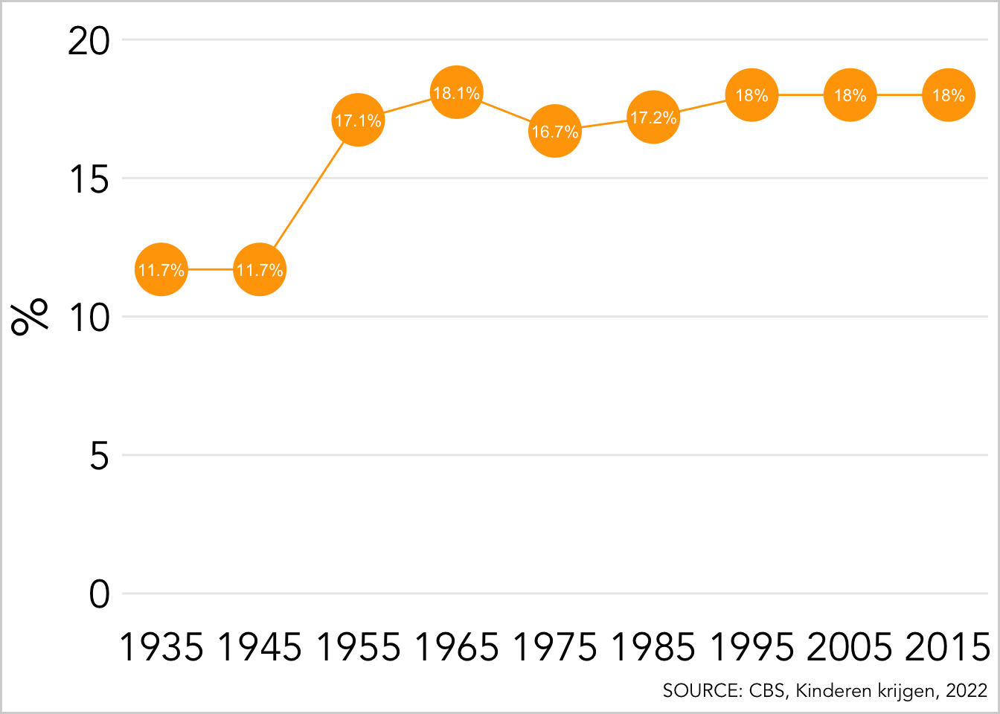